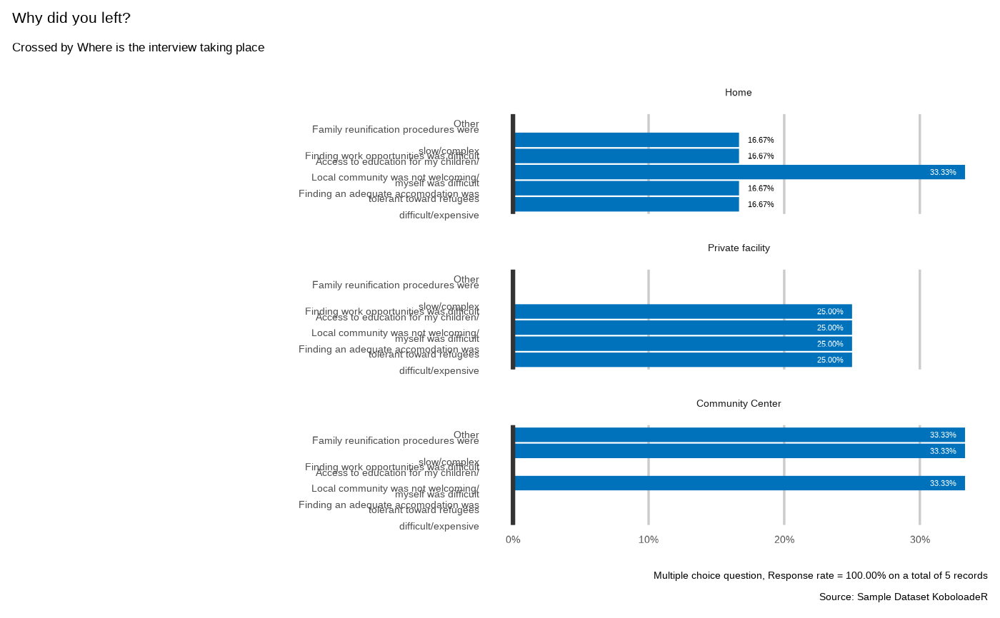

Plotting Select multiple variable with cross tabulation on a second categorical variable
Source:R/plot_select_multiple_cross.R
plot_select_multiple_cross.RdNote that if the column order is set in the xlsform choice part, the variable will be de factor considered as ordinal and the default ordering will not be done based on frequency
Usage
plot_select_multiple_cross(
datalist = datalist,
dico = dico,
var,
by_var,
datasource = NULL,
n = NULL,
n_by = NULL,
showcode = FALSE
)Arguments
- datalist
An object of the "datalist" class as defined in kobocruncher
- dico
An object of the "kobodico" class format as defined in kobocruncher
- var
name of the variable to display
- by_var
variable to use for cross tabulation
- datasource
name of the data source to display, if set to NULL - then pulls the form_title within the settings of the xlsform
- n
if not NULL, lumps all levels except for the n most frequent (or least frequent if n < 0) - cf forcats::fct_lump_n()
- n_by
if not NULL, lumps all levels for the cross tabulation variable except for the n_by most frequent (or least frequent if n < 0) - cf forcats::fct_lump_n()
- showcode
display the code
Examples
dico <- kobo_dico( xlsformpath = system.file("sample_xlsform.xlsx", package = "kobocruncher") )
datalist <- kobo_data(datapath = system.file("data.xlsx", package = "kobocruncher") )
plot_select_multiple_cross(datalist = datalist,
dico = dico,
var = "profile.reason",
by_var = "location",
showcode = TRUE)
#> Why did you left?
#> `plot_select_multiple_cross(datalist, dico, var="profile.reason", by_var="location", datasource=params$datasource, n=7, n_by=3 )`
#>
#>

## test lumping
plot_select_multiple_cross(datalist = datalist,
dico = dico,
var = "profile.reason",
by_var = "location",
n = 4,
showcode = TRUE)
#> Why did you left?
#> `plot_select_multiple_cross(datalist, dico, var="profile.reason", by_var="location", datasource=params$datasource, n=4, n_by=3 )`
#>
#>